C:\Users\zerke\OneDrive\Área de Trabalho\Arenamon\chars\Eggo\eggo pulos v4.blend | action: Jump Rise 1 | engine: BLENDER_WORKBENCH | tamanho: 200 | offset: 0 | Workbench headless, NAO e o viewport real do Blender. Camera, luz e grade de chao sao proprias da ferramenta.
blend_untouched: True | sha256: 3f35da62372750b4b25ee38afb0563c44490fa4fd42e9005008495fe29b3207c
Vista Modo Frame
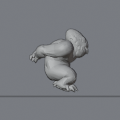
side_nX solid g1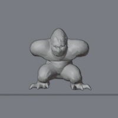
front solid g1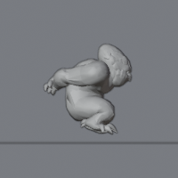
side_nX solid g2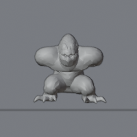
front solid g2side_nX solid g3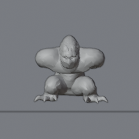
front solid g3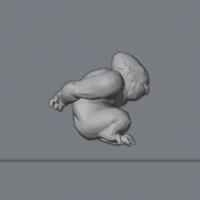
side_nX solid g4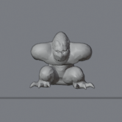
front solid g4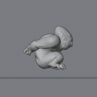
side_nX solid g5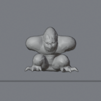
front solid g5side_nX solid g6front solid g6side_nX solid g7front solid g7side_nX solid g8front solid g8side_nX solid g9front solid g9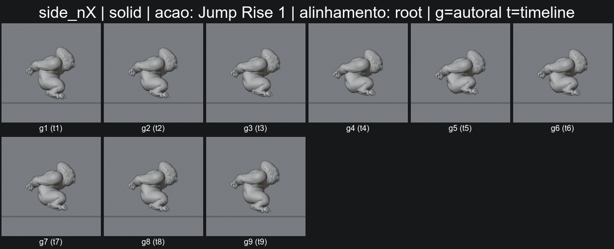
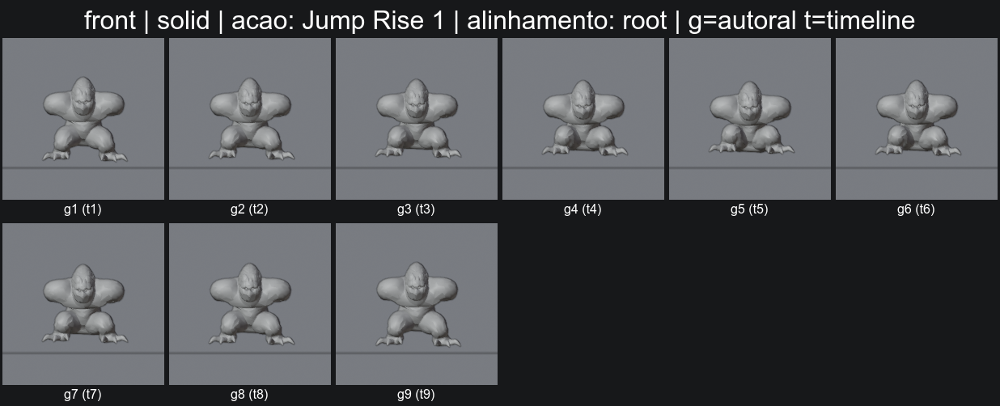
{}